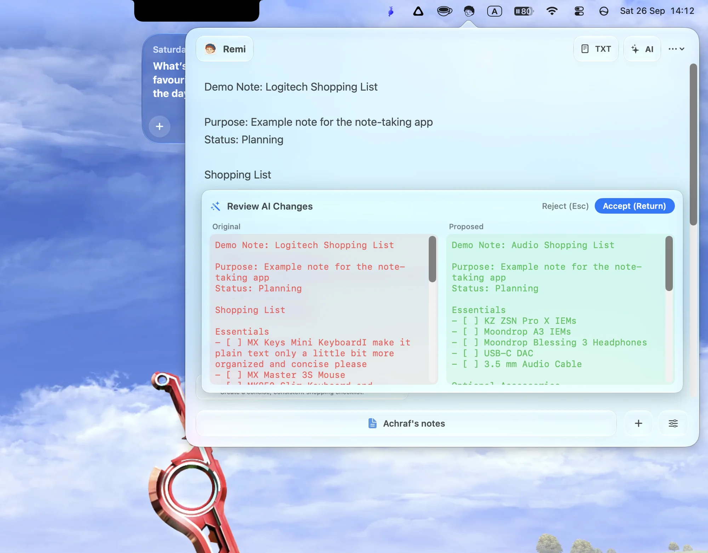
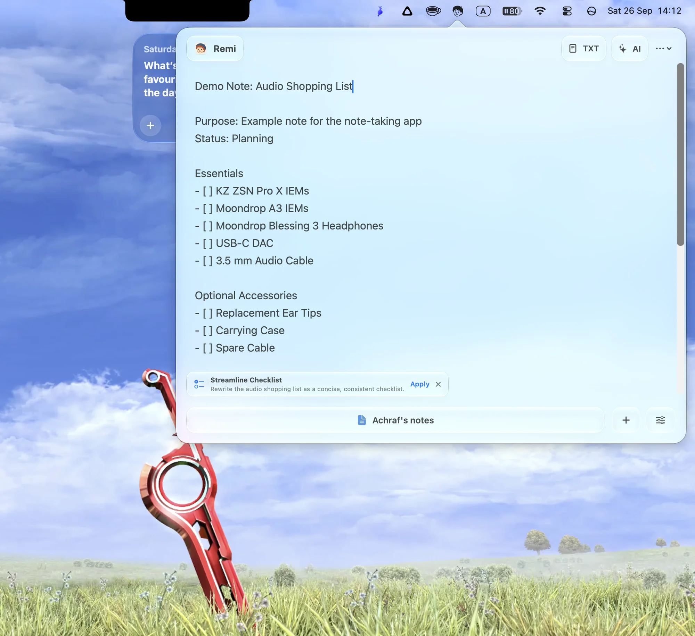
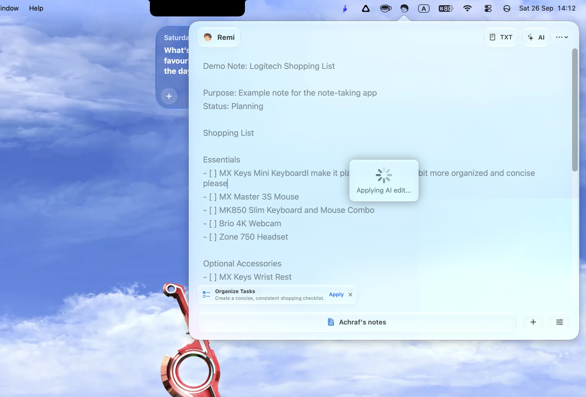

Review
Every change, side by side.
Nothing is rewritten behind your back. Remi shows the original next to the proposal, so you decide what lands.
Return Accept Esc Reject
New Liquid Glass for macOS Tahoe
Remi drops a Liquid Glass notebook from your menu bar. Swipe between Nooks, apply AI suggestions in one tap, and review every change before it lands.
Gestures
Your notes live in Nooks. Rest two fingers on the bar at the bottom of the panel and swipe left or right to flip between them. On a Force Touch trackpad, every switch lands with a crisp haptic tick, and each Nook wears its own icon and color, so you know where you landed at a glance.
Try it: swipe on the trackpad or the bar.
AI, on your terms
Remi reads the note you are in and offers one relevant action, quietly, in the bottom-left corner. Apply it with a tap, or dismiss it and keep writing.


Review
Nothing is rewritten behind your back. Remi shows the original next to the proposal, so you decide what lands.
Return Accept Esc Reject

Powered by OpenRouter
Remi connects to OpenRouter with your own API key, so you choose the model behind every edit. Ask for anything with the AI button, or use the suggestion that is already waiting for you.
The details
Press Option Command R in any app and Remi drops down from the menu bar. Press it again and it is gone.
Built for macOS 26 Tahoe and later, including macOS 27. It looks and feels like part of the system.
Flip to raw text when you want no formatting between you and your words.
Bring your OpenRouter API key and pick any model it offers. No Remi account, no subscription.
Notes are stored on your Mac. Text is sent to OpenRouter only for AI features, using your own key.
Open source
Remi is MIT licensed. Read the code, open an issue, or send a pull request. A star helps more people find it.